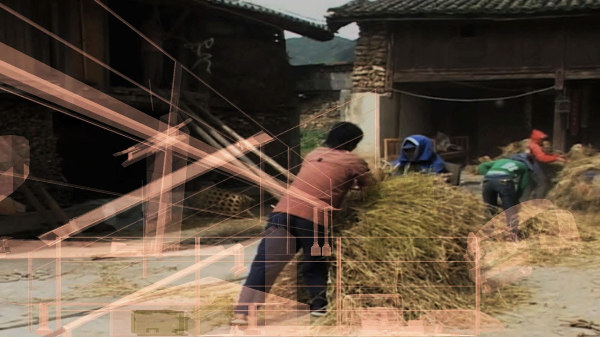
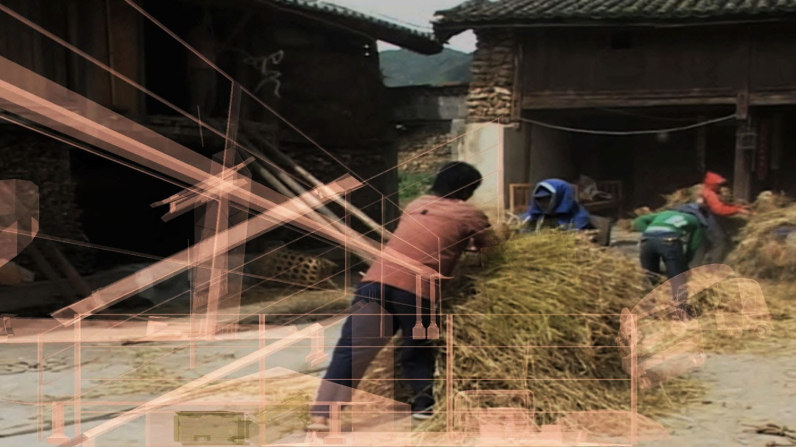
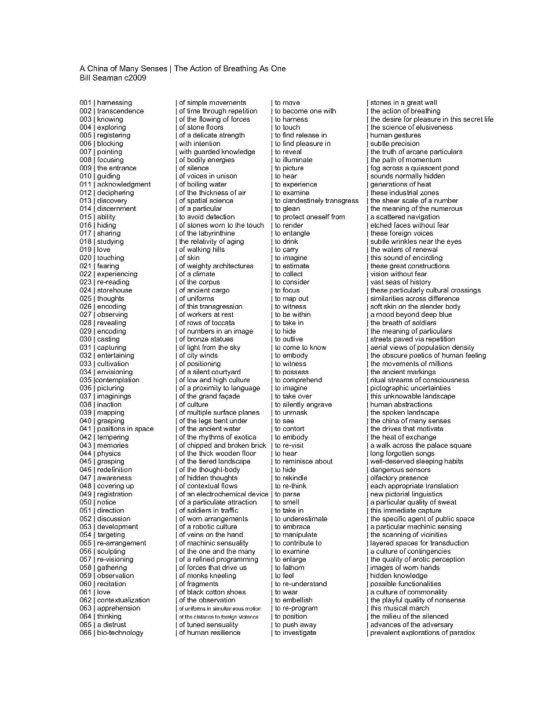

A China of Many Senses
A China of Many Senses / The Action of Breathing As One (video shot in China) - 2009 Linear Video
A China of Many Senses juxtaposes imagery from China's past and present, highlighting the tension of a country rapidly becoming the world's industrial powerhouse, while simultaneously maintaining many of its ancient modes of existence.
A China of Many Senses (auto-generative mode)
[version 1.0] generative video/audio/text installation
with Todd Berreth
IEEE Visweek 2011 Exhibition, Providence, RI
custom software written in C++/OpenGL, digital video/audio source material
This generative Virtual Environment draws in part of the video materials from above.
It frames, orders and builds with these materials, using a vocabulary and grammar of designed behaviors and construction typologies, diagramming and displaying the permutations with standard modes of architectural representation. The effect is to create a projected virtual space with a dizzying sense of logic, scale and balance - an imagined organic and built landscape at once both regimentally ordered and colossally haphazard, filled with both epic and intimate construction and permeated with history.
The artwork is driven by a software engine, written in C++ and OpenGL. In real-time, it recombinately composes a library of disparate elements, video and image content, spoken-word phrases, 3d models and musical passages, into an evocative dynamic collage, media landscape and hyper-constructed assemblage.
A China of Many Senses specifically explores the aesthetic potential of utilizing standard architectural visualization techniques and an algorithmically modulated, database-driven virtual environment to create a dynamic poetic space, which may provide suggestive and often unexpected insights into an incredibly relevant and interesting contemporary condition.
A China of Many Senses (2012)
Bill Seaman with Todd Berreth
 

generative installation / architectural projection
documented at Nasher Museum of Art, Durham, NC, featured exhibition at CHAT 2012 Festival
custom software written in C++/OpenGL, digital video/audio source material.
Bill Seaman, Principle Investigator and Artist (concept and initial design), Todd Berreth (programming and additional design).
The artwork is driven by a software engine, written in C++ and OpenGL. In real-time, in a combinatoric manner, it composes a library of disparate elements, video and image content, 3d models and musical passages, into an evocative dynamic collage, media landscape and hyper-constructed assemblage. A China of Many Senses specifically juxtaposes imagery from China's past and present, highlighting the tension of a country rapidly becoming the world's industrial powerhouse, while simultaneously maintaining many of its ancient modes of existence. It frames, orders and builds with these materials, using a vocabulary and grammar of designed behaviors and construction typologies, diagramming and displaying the permutations with standard modes of architectural representation. The effect is to create a projected virtual space with a dizzying sense of logic, scale and balance - an imagined organic and built landscape at once both regimentally ordered and colossally haphazard, filled with both epic and intimate construction and permeated with history.
A China of Many Senses explores the aesthetic potential of utilizing standard architectural visualization techniques and an algorithmically modulated, database-driven virtual environment to create a dynamic poetic space, which may provide suggestive and often unexpected insights into an incredibly relevant and interesting contemporary condition.
